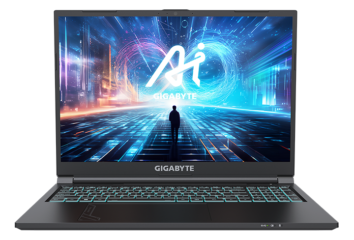

Игровые ноутбуки GIGABYTE AI
Пришло время управлять возможностями искусственного интеллекта (ИИ). Представляем новую линейку игровых ноутбуков GIGABYTE, наделенных ИИ и сочетающих элементы модных игровых трендов с впечатляющей производительностью нового поколения. Эти ноутбуки, оснащенные процессорами Intel® Core™ i7 и мобильной дискретной графикой серии NVIDIA® GeForce RTX™ 40xx, способны в полной мере задействовать незаурядный потенциал генеративного ИИ. Используйте их впечатляющее быстродействие и ИИ-технологии, чтобы справляться с новыми вызовами легко и уверенно.
Новый стильный дизайн подчеркивает мощь игровых ноутбуков GIGABYTE. Футуристичная гравировка тачпада модно выглядит и погружает в игровую атмосферу, соединяя дизайн и производительность.